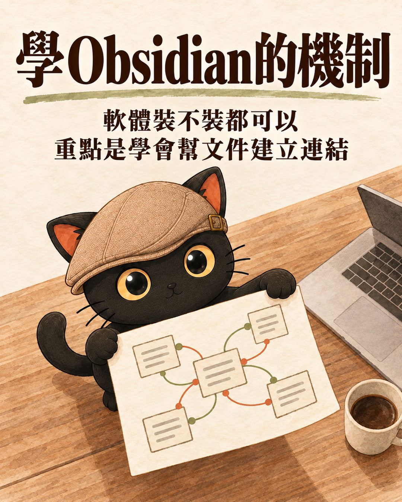
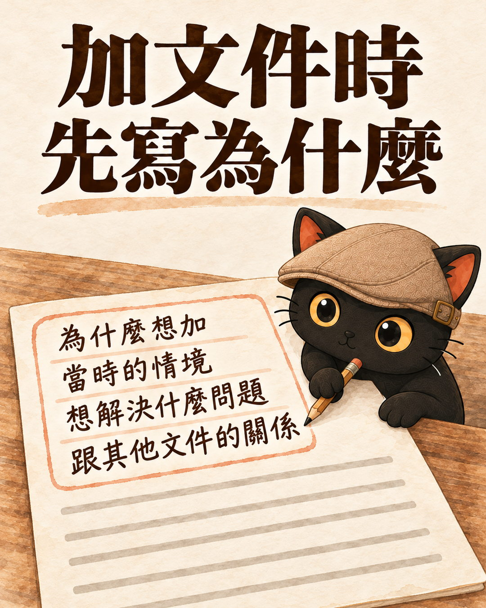
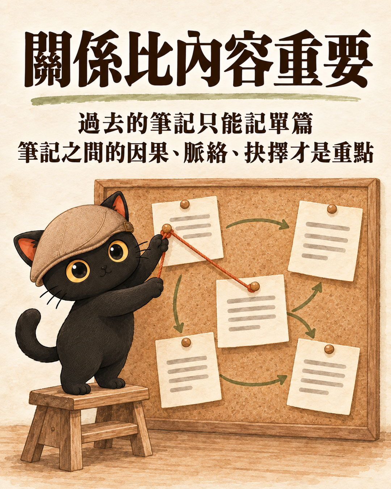
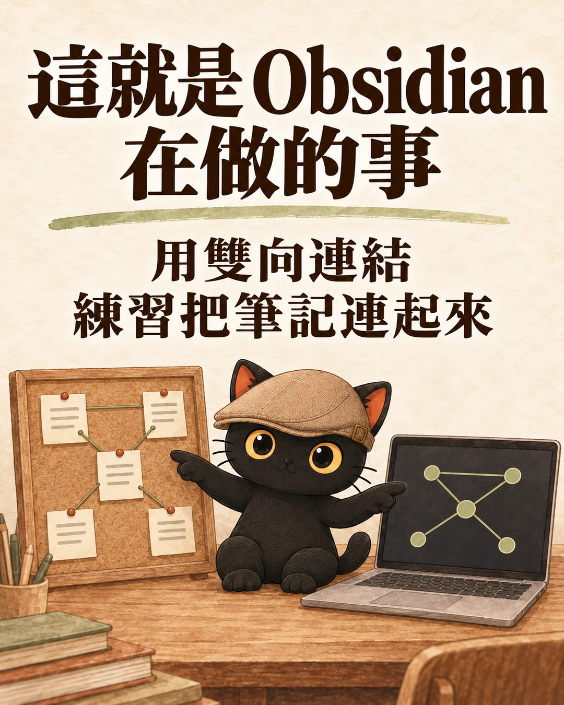
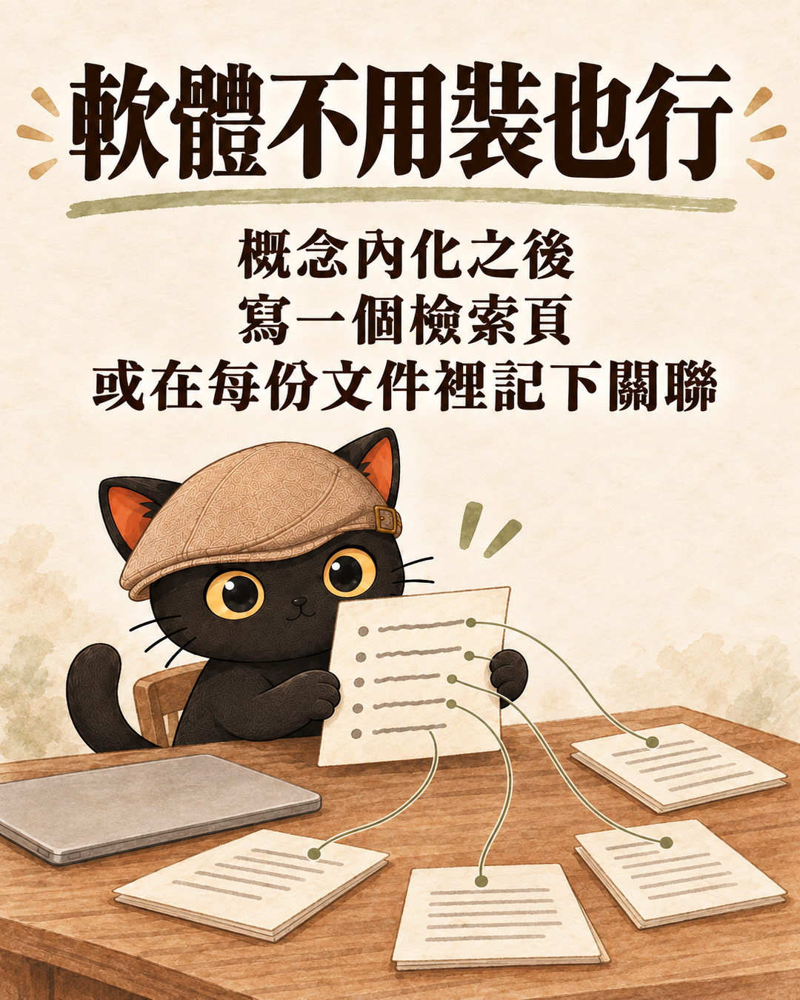

這篇在講什麼
很多人聽到知識管理，第一個問題是要裝哪套軟體。我覺得要學的是 Obsidian 背後建立連結的機制：每加一份文件，就寫下為什麼留下它、它跟哪些文件有關。機制學會了，軟體裝不裝都可以。這篇用我自己知識庫裡真的在用的做法，把這套機制拆開來講。
- 聽說 Obsidian 很好用，在猶豫要不要裝的人
- 裝了 Obsidian，筆記越存越多，筆記之間的關聯卻很少的人
- 想把自己的資料整理好，讓 AI 讀得懂、找得到的人
- 要幫客戶或團隊整理知識庫，想找一套跟軟體無關的做法的顧問
- 加一份文件時要多寫下的六件事
- 工作日記寫「來源」和「去處」兩行的做法
- Obsidian 雙向連結在做什麼，用一段話講清楚
- 不用 Obsidian 時，用檢索頁和文件內的關聯做到同一件事
- 一段可以直接貼給 AI 的提示詞，讓它幫你把「為什麼」問出來

這篇的起點，是我看到 @chihua.wang.3 一篇講 Obsidian 的貼文，寫得不錯。我在底下留了一句：
我的留言（原文）真的，重點是 為什麼我覺得這些內容重要 而不是這些內容
這句話我常講。下面把它展開。
- 我上課不教 AI 工具，因為工具是 AI 該操作的
這一段只講 Obsidian 這一套軟體，那篇講為什麼學工具會把你綁在操作者的位置。
加一份文件時，多寫下為什麼留下它
我把一份文件加進知識庫的時候，都會多寫幾件事：
- 為什麼我覺得這份文件重要
- 為什麼我想加
- 我教 AI 這個的原因是什麼
- 我當時的情境是什麼
- 我希望這份文件幫我解決什麼問題，或者我是解決了什麼問題才寫了這篇
- 這份內容跟其他內容有什麼關係
我覺得這才是重點。對我來說，文件跟其他文件之間的關係才是重點。

我的規則主檔：重要規則旁邊都記著立因
我有一份寫給 AI 看的工作守則，檔名叫 AGENTS.md，就是一份文字檔，我稱它規則主檔。許多重要規則旁邊都留著立法日期和立因。規則越寫越多之後，我把立法署名、事故經過和舊版原文搬到另一份檔案「立法沿革」，主檔只留可以執行的條文；要查「這條什麼時候立的、為什麼立」，就去讀那一份。
例如「生圖執行路線」這一條，沿革裡記著它是 2026-08-17 立的，起因是我連續糾正三輪之後，才把它從技能包升級到規則主檔。少了這段，下一個讀到這條規則的人或 AI，只看得到一句命令，不知道它在防什麼。
我用的 AI 助理 Claude，會把我交代過的事記成一則一則的記憶，很多則也是同一套寫法：寫下 Why（為什麼有這條）和 How to apply（什麼時候用、怎麼用）。
- 直接抄別人的 Skills、工作流，其實沒什麼用
這一段只講自己加文件時寫下為什麼，那篇講抄別人的規則為什麼抄不到背後的判斷。
文件之間的因果、脈絡、抉擇，比單篇內容重要

我以前用的筆記方式，就只能記單篇。筆記跟筆記之間的脈絡、它們之間的因果關聯，沒有一起留下來。
我覺得這才是重點：這些因果、脈絡、抉擇。決策才是重點。
工作日記要寫來源和去處
2026-05-10 我用 ripgrep 分析知識庫裡的雙中括號連結，找出工作日記資料夾裡有 42 篇是孤兒，沒有被任何一篇連到；它們也是關聯圖上出現一堆散星的原因之一。我當時的想法是：我會有這個靈感，一定是我在讀什麼、學什麼、要做什麼。
所以後來的規則是，寫工作日記要在標籤下面加兩行：
讀的書、在做的專案、開的會、前一篇日記。
哪堂課、哪個產品、哪場會議、哪個技能包、哪篇文章。
這兩行寫下去，日記就不再是單篇獨立存在，它接上了前因和後果。
- 3X4 資料整理法新版：三種日記我改了｜AI 的工作日記、我的工作日記、觀點日記
這一段只講日記要寫來源和去處，那篇講三種日記各自記什麼、為什麼改。
Obsidian 的雙向連結和關聯圖，就是在把文件連起來
Obsidian 的做法，是用雙中括號把兩份文件連起來。我在 A 文件寫下連到 B 的連結，打開 B 的時候也看得到 A 連過來，這叫雙向連結。所有連結攤開來，就是關聯圖。
上面那 42 篇孤兒，在關聯圖上就是一顆顆沒有線的散星。關聯圖讓「這份文件跟誰有關」變成看得見的東西，所以我說 Obsidian 是練習建立連結很棒的方法。

標籤也是一種連結
我的標籤也用雙中括號寫，每個標籤本身就是一張卡片，點進去看得到所有掛這個標籤的文件。標籤由一份受控字典管理：同一個意思只留一個統一用詞，其他寫法列在「不使用」。這樣同一件事不會被拆成好幾個標籤，連結就不會斷掉。
- 資料越堆越多，AI 反而找不到怎麼辦？：標籤連結法 Tag Wiki
這一段只講標籤也是連結，那篇講受控維度、字典檔與版本控管怎麼做。
機制學會了，沒有 Obsidian 也做得到

這個概念內化之後，其實不用 Obsidian。寫文件時自己額外寫一份檢索頁，或者在每一份文件裡把關聯性記下來，也可以。
做法一：寫一份檢索頁
我的工作台有一份「專案位置總表」，記每個專案在哪、狀態、交接方式，另外還有一份「人物檢索總表」。我給 AI 的檢索規則寫明了順序：問專案在哪，先讀專案位置總表，再讀專案檢索頁，再跟著入口連到主檔；以上都不夠，才做範圍搜尋。不要第一步就全庫搜尋。
這兩份檢索頁就是一般的文字檔，不需要任何軟體功能。
做法二：在文件裡寫下關聯
我的規則主檔裡，每條規則後面都寫著「細則見哪份檔案」。大多數技能包的說明檔最後，有一段自動生成的「本包檔案」清單，列出這個技能包底下所有分頁的連結。
我同時用好幾家公司的 AI 助理（Claude、Codex、Gemini），它們都讀同一份規則主檔，跟著文字裡寫的檔案路徑去找下一份檔案。它們不必打開 Obsidian，也能跟著文件裡寫下的路徑找到下一份檔案。
我自己也還沒做好的地方維護連結要成本。我的標籤字典在變更紀錄裡，好幾個版本都標著「四方同步未完成，另案補」，意思是字典改了，對應的詞彙卡和檢索頁還沒跟上。連結的機制建起來了，不代表每一條都隨時是最新的。
- 資料越存越多，怎麼讓 AI 找得到？｜LLM Wiki、技能包、Tag Wiki 的檢索頁、雙向連結與漸進式載入
這一段只講不用 Obsidian 也能記下關聯，那篇講檢索頁、雙向連結、漸進式載入三件事怎麼一起用，還附一段請 AI 做第一張檢索頁的提示詞。
從下一份文件開始的三個做法
- 多寫兩三行。下一次加文件時，在最上面寫下為什麼加、當時的情境、想解決什麼問題。
- 寫下它跟誰有關。寫完後問自己：這份文件跟哪一份有關？把那份的名稱寫下來。有 Obsidian 就用雙中括號連，沒有就直接寫檔名。
- 文件多了就寫檢索頁。找不到東西的時候，寫一份檢索頁，列出主要文件在哪、各自負責什麼。
文件最上面可以這樣寫，有幾行寫幾行：
可以直接貼給 AI 的提示詞：
Obsidian 是一個很好的練習場。等到「每份文件寫下為什麼、記下跟誰有關」變成習慣，你用什麼軟體寫，就沒那麼重要了。
- 我上課不教 AI 工具，因為工具是 AI 該操作的
- 直接抄別人的 Skills、工作流，其實沒什麼用
- 3X4 資料整理法新版：三種日記我改了
- 資料越堆越多，AI 反而找不到怎麼辦？：標籤連結法 Tag Wiki
- 資料越存越多，怎麼讓 AI 找得到？
- 把資料丟給 AI，它其實沒有全部看完：RAG 的三種查法與怎麼選
資料整理好之後，AI 實際上是怎麼查你的資料的。